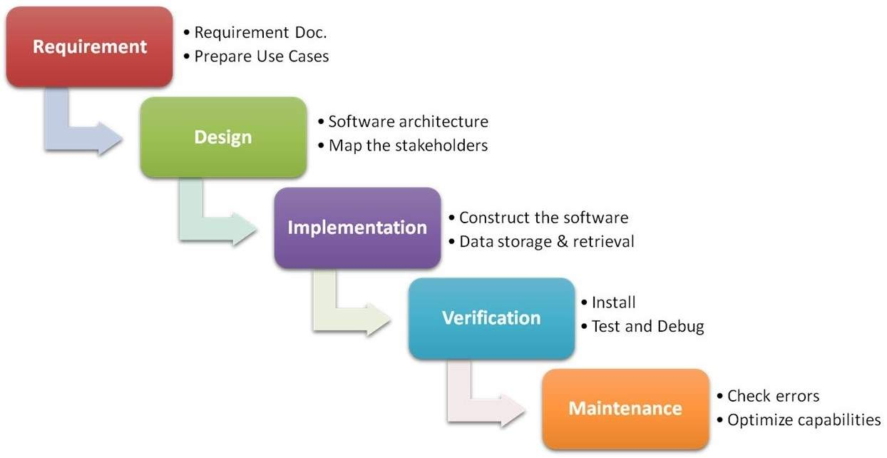

Starting a Software Company As A Non-Technical CEO
Table of Contents
- 1. Introduction
- 2. A Quick Survey of Software Development
- 2.1. Things Every Successful Software Project Must Do
- 2.1.1. Define the Problem & the Constraints *
- 2.1.2. Define the High Level Solution *
- 2.1.3. Specify the Low Level Workflows *
- 2.1.4. Design the User Interface (UI) for the Application
- 2.1.5. Specify a High Level Technical Architecture
- 2.1.6. Specify What Services and Components You Need
- 2.1.7. Decide What to Build vs Buy
- 2.1.8. Choose a Platform/Infrastructure
- 2.1.9. Security
- 2.1.10. Design the Data Model and Application Model
- 2.1.11. Implement the Services and Components
- 2.1.12. Verify the Application Works. Under Every Conceivable Circumstance. *
- 2.1.13. Maintain the Application
- 2.2. Roles
- 2.2.1. Product Manager
- 2.2.2. User eXperience (UX) Designer
- 2.2.3. User Interface (UI) Designer
- 2.2.4. UI/Front End Software Developer
- 2.2.5. Server Side/Back End Software Developer
- 2.2.6. Full Stack Developer
- 2.2.7. Architect
- 2.2.8. Database Administrator (DBA)
- 2.2.9. Network Engineer
- 2.2.10. IT
- 2.2.11. Quality Assurance (QA)
- 2.2.12. QA Automation Engineer
- 2.2.13. DevOps
- 2.3. Software Development Methodologies
- 2.1. Things Every Successful Software Project Must Do
- 3. Creating a Development Organization
1 Introduction
So, you have a great idea for solving a problem in a business you are expert in by building an app, but you’ve don’t know anything about building software? This essay will give an introduction to the stages, roles, methodologies and terms you’re likely to run into. You have a variety of options in terms of how you get your product built, but you’ll likely want to find someone who is familiar with the intricacies of running a software development organization – this is a very high level overview of what’s involved, and isn’t enough to ensure your product is developed correctly.
2 A Quick Survey of Software Development
Before we get into the meat of how to run a software company as a non-technical CEO, you should understand what goes on during a software development project, what kinds of roles are required, and the different options for organizing development.
2.1 Things Every Successful Software Project Must Do
There are a large number of tasks which must be accomplished in any successful software development project. Different methodologies solve them in different ways, but any successful project must address all of them. As a non-technical CEO, the tasks that you own or play a critical role in are marked with an asterisk.
2.1.1 Define the Problem & the Constraints *
This is pretty obvious – you have to know what the problem is that you’re trying to solve, and the set of constraints the solution must function within to be successful. Often the constraints are as or more important than the problem itself, and understanding what constraints are imposed by the context in which the solution will be used, the end user’s desires, and what activities are important to or difficult for them has more impact on what differentiates a successful product from an unsuccessful one than its functionality. In most methodologies, the problem definition is contained in as the Requirements.
You own the problem and constraints definition. After all, this is what defines the market your company is addressing.
2.1.2 Define the High Level Solution *
Having established the problem and the constraints, figure out what the solution looks like. What portions are automated and which are manual? What are the specific workflows you’re supporting? What data do you need to collect at each step? What data do you need to have for each step? It’s generally a good idea to have a technical person involved in this phase, since they can give you an idea of how difficult each thing will be to implement, and whether it’s even possible (I’ve heard a lot of pitches involving AIs that are, apparently, magical in their capabilities and accuracy). In most methodologies, this is also part of the Requirements.
You also own the high level solution, because that’s what the company is. This doesn’t mean that you’re solely responsible for coming up with the characteristics of the solution, but that you’re both directly responsible and accountable for it.
2.1.3 Specify the Low Level Workflows *
For each workflow, what screens will it be split up into? What screens can you get to from each other screen? What data will you show or be asked to provide at each step? What actions will occur at each step?
You directly own this, because it’s the materialization of your solution. You may use a UX Designer or a Product Manager to help you define these, but you’re going to be responsible for it at a granular level, making sure that it meets the user needs directly and efficiently.
2.1.4 Design the User Interface (UI) for the Application
For each screen in the workflow, what fonts will you use? What types of input fields? Where are the input fields exactly on the screen? Is it different on mobile than on desktop versions of the application, and if so, what does each look like? What graphics are you going to use and where?
2.1.5 Specify a High Level Technical Architecture
The Technical Architecture includes things like:
- Define what progamming language or languages you’ll be using.
- Choose what libraries A Library is a collection of functions that you can include in your program and call whenever you want. and frameworks A Framework is an application or library that allows a programmer to add their own functionality to it in specific ways. For example, react.js is a UI framework. It tells you where you can plug in your own logic to create a screen, and when run, it will call your code. A framework calls your code at specific times and in specific ways. you’ll use for different parts of the application.
- Decide where you’re going to store your persistent data (SQL? Key-Value? Files? Which type?)
- Define how different parts of the application talk to one another will talk to each other (synchronously or asynchronously, using which format – and how do you manage changes to their API API stands for Application Programming Interface. An API defines what requests you can make, what parameters you can pass as part of the request and what they mean, and what the reply looks like, as well as the mechanism and format by which you can make a request.. s over time?)
2.1.6 Specify What Services and Components You Need
Break down the application into smaller parts that do particular things (Components). For example, an online store might be broken down into catalog, inventory, shopping cart and payment processing components. Decide whether each component should just be part of a single program or whether they should run on their own. Define the technical architecture for each component.
2.1.7 Decide What to Build vs Buy
Are you going to build a given component, buy a library that does it, or pay for a service. This decision is typically made by comparing overall cost, maturity, capabilities, and availability.
2.1.8 Choose a Platform/Infrastructure
What operating system is your application going to run on, and how will you maintain it? Will you buy your own hardware? Run servers from your office or rent space in a data center? Will you host on virtual machines or docker containers, or go serverless entirely? What kind of networking rules will you need to keep your data private? What kinds of connections will you allow? How much bandwidth do you need, and from where will you get it? There’s a lot of complexity here, and decisions in this area can have a big impact on the cost of running your application and how well it performs. Typically, your CTO will specialize in software. If you’re hosting your own servers, you’ll also need an IT person (at the C-level, this is usually called a CIO or Chief Information Officer). For most startups today, the answer to all of this is “we’ll use AWS”. Even within that scope, though, there are still a bunch of decisions that need to be made, since AWS provides multiple different ways of doing the same thing, that differ in the circumstances in which they’re used.
2.1.9 Security
Security should be considered as part of every task. Who is allowed to see what when? How do we make sure that our user information can’t be hacked? How do we make sure that no one else in the same datacenter can see information in our application? Security is a vast topic, and impacts everything we’ll talk about.
2.1.10 Design the Data Model and Application Model
Figure out how the data will be structured in the database and other parts of the application. Design how the internals of each component will work.
2.1.11 Implement the Services and Components
Here’s where you actually program what’s been previously defined. Sometimes you realize that the assumptions you made in earlier parts of the decision process were wrong, in which case you have to go back and make different decisions. Mistakes found in this stage are very expensive.
2.1.12 Verify the Application Works. Under Every Conceivable Circumstance. *
Or more simply, test. Test everything, always. This is your feedback loop, and it gives you the information you need to run the company. Things you’ll test include:
- Am I solving an actual problem?
- Are the constraints I’ve identified set in stone or can I change them?
- Does this workflow solve the problem?
- Is my value proposition clear to potential users?
- Does the software do what I specified reliably?
The last one is software testing, and you’ll want to, yourself, verify personally that the software works and that you won’t be able to break it. You’re the closest thing the team has to an end user, and so will be able to find things that developers and QC might miss, because they don’t think in the same way the user does. Additionally, there are tests that your development team or QA department will run. Some of the most significant types of tests are:
- Functional Tests. Make sure that the application does what you want. This reveals flaws in decisions made during implementation.
- Integeration Tests. Do the different components/services in the system work correctly together reliably.
- Disaster Recovery Tests. Make sure you don’t lose data if one, many, or all servers go down. Make sure that your app still works if one of your data centers goes down. Test all the different combinations of things going wrong that you can to make sure that the application behaves reliably. DR testing most commonly shows flaws in decisions made during technical architecture and the implementation.
- Performance tests. Make sure that the application is fast enough.
- Load tests. Find out how many users/requests the application can support without slowing unnacceptably or crashing, given a particular number of servers.
2.1.13 Maintain the Application
Make sure the application continues to be available for users. Address any questions/complaints the users have, Fix bugs you didn’t find during testing.
2.2 Roles
Each one of the tasks above can have it’s own specialist. Here are the typical roles in a dev organization and what they do:
2.2.1 Product Manager
This role represents the end user in the context of the business. The PM is responsible for understanding and communicating the problems and desires of the users to the other members of the team, and makes the ultimate decisions about whether the cost of developing a particular feature is outweighed by the benefit to the user. The Product Manager is also responsible for creating the strategy that will increase the market share and profitability of the product.
2.2.2 User eXperience (UX) Designer
The UX Designer is responsible for designing the flow of every part of the application. They decide what screens are in the application, how the user moves from one to the other, what data is on each screen and how the data is represented (type of inputs, grids vs graphs, types of graphs). This overlaps with the the PM on one end and the UI Designer on the other.
2.2.3 User Interface (UI) Designer
This role designs exactly what the screen will look like, including final graphics and position and appearance of every element on the screen. Overlaps with UX Designer on one side and Software Developer on the other (since the design is constrained by technical capabilities, and may be constrained by cost to implement, if a particular theme already exists for the UI framework).
2.2.4 UI/Front End Software Developer
Writes software for the User Interface.
2.2.5 Server Side/Back End Software Developer
Writes software that runs on the server.
2.2.6 Full Stack Developer
Writes software for both the UI and the server.
2.2.7 Architect
An architect is usally a very senior developer who is responsible for the Technical Architecture, dividing the application into components, and often the Platform/Infrastructure choice. Overlaps with all of the development roles.
2.2.8 Database Administrator (DBA)
Databases are complicated. DBAs make sure they stay up and running, are backed up and can be restored, and perform well (including optimizing queries). There are also Database Developers, who are more specialized to optimizing queries and designing data models.
2.2.9 Network Engineer
Responsible for setting up the network, defining the routes between servers, and instituting the required network level permissions. Even if you are not officially managing the network at your hosting provider, you will still need to set up the firewalls around your servers, detect when you’re under attack. and set up ways of mitigating those attacks.
2.2.10 IT
An umbrella term for the people who set up the servers and operating systems, keep the OS up to date with bug fixes and security patches, and administrate some of the more complicated typically used pieces of software (ex. mail server and compliance software)l Overlaps with Network Engineers, DBAs, Architects.
2.2.11 Quality Assurance (QA)
QA spans two activities:
- Quality Assurance, which involves making sure that the overall process of software development is running properly. QA often manages the overall development process, making sure that the required information for the next step is defined and documented.
- Quality Control (QC), which is responsible for defining and executing test cases to ensure that the application meets the requirements. Execution may be automated in some cases. Usually, today, when people talk about QA they really mean QC. QA overlaps with the Product Manager (good QA is a very detail oriented version of a PM without the application strategy portion).
2.2.12 QA Automation Engineer
Many tests can be automated. A QA Automation person writes programs that test the application. There are different frameworks and languages used to test the UI and server, and for different types of tests (load, integration, performance). Since the tests are code, they can have bugs, and writing a complete, flexible test suite can have the same cost as developing the application itself. Often, some level of automated testing is done by the development team. The amount of automated testing needed by an application depends on many different factors.
2.2.13 DevOps
This is a relatively new role that came about because of the rise of PaaS Platform as a Service. The ability to host servers on someone else’s infrastructure, and manage server creation through a set of APIs . This role combines the responsibilities of IT, Network Engineer and DBA into a single role who’s goal is to write programs that call the PaaS APIs to do the jobs of the previously mentioned roles. For example, DevOps would write a program to update all 100 servers in your fleet with the latest version of the OS. They might also write scripts that, when you’re getting a lot of user requests, would add more servers to your fleet to handle the load, and remove them when the load went down.
Sometimes DevOps also means that your application developers (typically a Back End or Full Stack Developer) also takes on the responsibility for writing PaaS-based programs. This can be a positive in that merging hardware and software can lead to greater efficiencies for the application as a whole. Typically, though, app developers lack detailed knowledge about the intricacies of the items covered in the IT arena, and you can wind up with significantly higher operating costs or security vulnerabilities as a result.
2.3 Software Development Methodologies
Software methodologies should be evaluated by two criteria:
- Efficiency – how much time, effort, and people are required to produce the software
- Accuracy – how well does it deliver what the customer really wants at the time the software is delivered, rather than what they said they wanted at the start.
2.3.1 Some Notes on Estimation
Note that one thing you might expect in this list is missing: predictability. Software development is famously unpredictable. They’ve been doing academic studies on software development since the 60s, and the conclusion is that software estimation, due to the amount of complexity involved in a project of any significant size, is typically within an order of magnitude of what actually happens. There are lots of things that can be done to increase accuracy, particularly when the project you’re working on is the same as other projects you’ve worked on, but it’s still typically only within 100% of the original estimate.
This may seem strange, since software development happens under fixed time (or budget, which amounts to the same thing) constraints all the time. If it’s so fabulously impossible to estimate, how does anything get done? Isn’t this a huge overstatement?
How things get done in a predictable amount of time is by manipulating the values in the Project Management Triangle, usually expressed as “Good, fast, cheap. Pick two.” When estimations are off, usually the developer will trade some element of “Good” to make up the time, either in terms of the completeness of functionality or in terms of its reliability. Additionally, software projects are usually divided into small “sprints” where a subset of functionality is worked on for a short period of time – 1-2 weeks. If estemations at that level of granularity are off, fixes can be added in a later sprint, and scope can be changed in the course of sprints to make things fit.
This is why fixed price software development is always suspicious. In order to generate the fixed price, the vendor must know enough of the final expected functionality to be able to say when the job is complete and have the customer agree, meaning the scope is fixed. Since the vendor is setting a fixed price, the cost portion of the triangle is fixed, meaning that the number of man days for developers is also fixed, unless the vendor is willing to lose profit on the engagement. There are a couple of ways the vendor can safeguard profitability:
- Pad the price enough to absorb any overruns.
- Make sure that they’ve built this kind of project before, or something close to it. If they just have to customize existing code, the overall scope of work is smaller, so the amount that they could be off by is less.
- Alternatively, make sure there are open source or commercial libraries or services that will do the majority of the work. Stringing together libraries and choosing what parameters to pass as part of which requests is less actual development, so less risky.
- Keep the Scope high enough level that there are a variety of implementations at different complexities that will meet the requirements. (i.e. redefine some quantity of “good”).
- Lower quality/reliability, if the user is unlikely to find the bug within a certain period after delivery. This works well if you can charge a maintenance fee, particularly if the maintenance fee is set at project end.
- Most consulting companies don’t have all of their resources in a gig at one time. You can use your benched resources to add horsepower. For the company, it’s the same cost, since they’re getting their salaries although not on another job.
- Similarly, if the problem is one of just having enough people working enough hours, you can replace a senior resource with some junior resources, and use the senior on a different project.
Fixed price bids can work well if you need absolute cost containment, and you don’t have fixed needs about the quality of all of the deliverables – if some items just need to check a box and others have very specific requirements, fixed price can be OK.
I’m going to present a scattering of the methodologies you’re likely to encounter, and discuss their strengths and weaknesses.
2.3.2 Scratching Your Own Itch – The Best
This methodology is really simple. I have a problem. I write a program to solve the problem. I’m happy. Done.
This is the most efficient and accurate way of doing development, because:
- It’s perfectly accurate. There is perfect knowledge at every part of the development process about what the customer wants and what tradeoffs they will accept..
- It’s perfectly efficient because there is no communications overhead, and the cost/benefit ratio of all decisions is always what the client wants at the current moment.
Most open source software started using this methodology, including almost all of the big libraries that are used by millions of developers. It is, pretty clearly, the best possible way to develop software.
It doesn’t work under all conditions, though. For example, if the person having the problem doesn’t know how to program, it’s not so effective. Or if you don’t have enough knowledge about a technology you need to use to solve the problem. Or if you need the problem solved in less time than you could program the solution in, and need some more people to help you.
2.3.3 Waterfall – Mostly the Worst
I’m including this one because it tends to crop up in consulting gigs, particularly where they’re fixed price. Waterfall breaks the different activities into types, depending on who’s doing them, and puts them in a specific order:  Usually, this is done for the application as a whole, rather than for individual parts of the application. Only once a particular step is complete can the next step begin. Typically the people at each step have access only to the preceding step. The end result of the early steps is a set of documents, which are used to communicate what the next step should do.
Advocates will give the following pros for the waterfall methodology:
- Top down definition, both as the client determining functionality and within different departments working on the project.
- Decisions are finalized at the most inexpensive possible point. Wrong requirements are more and more expensive to fix the farther down the waterfall you go, so you finalize each area, do a formal review and handoff to the next step, which allows any problems the next step sees to be fixed before having impact on the next areas.
- Fully Auditable. Since requirements are documented in full detail at each step, there’s less miscommunication or missed items, the full contract for what is to be built is visible to the managers at the top, and if there’s a problem, you can, post-mortem, figure out where it came from and make adjustments so future projects won’t make the same mistake.
- More predictable. At the end of each stage, the time cost for the next stage can be estimated more accurately, since all requirements necessary to do the next stage are known, documented, and unchanging. It’s still inaccurate if you’re estimating based on just the top items in the waterfall, but it gets more accurate the farther down the waterfall you go.
In practice, though, it usually winds up not working well against our axes of evaluation:
- It’s very inefficient, since a lot of time is spent on documentation, and the split between specialized roles results in high barriers to communication.
- It’s not accurate, since it’s a big game of telephone. And because each slippage is locked at each stage, and the application is done as one piece, what comes out at the end is often not what the client wanted.
- It’s also not accurate because needs change over time, and what comes out at the end of the process often isn’t what was desired at first.
It can be useful, however, when you’re rewriting a large system. In that case, the requirements are known and unchanging, and the impact of making a change to any part of the system needs to be analyzed for the system as a whole. So it’s not completely useless.
2.3.4 Agile – The Best Under the Circumstances
Agile arose in reaction to the use of waterfall in the late 90s. In 2001, a group of senior developers put together the Agile Manifesto which basically describes the characteristics of any small development team in a buisiness after evolutionary selective pressure has been applied. I’m going to quote the whole thing, because it’s brief and all of the ideas are important. The manifesto is as follows:
We are uncovering better ways of developing software by doing it and helping others do it. Through this work we have come to value:
Individuals and interactions over processes and tools
Working software over comprehensive documentation
Customer collaboration over contract negotiation
Responding to change over following a planThat is, while there is value in the items on the right, we value the items on the left more.
Additionally, they defined 12 principles:
- Our highest priority is to satisfy the customer through early and continuous delivery of valuable software.
- Welcome changing requirements, even late in development. Agile processes harness change for the customer’s competitive advantage.
- Deliver working software frequently, from a couple of weeks to a couple of months, with a preference to the shorter timescale.
- Business people and developers must work together daily throughout the project.
- Build projects around motivated individuals. Give them the environment and support they need, and trust them to get the job done.
- The most efficient and effective method of conveying information to and within a development team is face-to-face conversation.
- Working software is the primary measure of progress.
- Agile processes promote sustainable development. The sponsors, developers, and users should be able to maintain a constant pace indefinitely.
- Continuous attention to technical excellence and good design enhances agility.
- Simplicity–the art of maximizing the amount of work not done–is essential.
- The best architectures, requirements, and designs emerge from self-organizing teams.
- At regular intervals, the team reflects on how to become more effective, then tunes and adjusts its behavior accordingly.
Software built according to the above principles is both efficient, due to low communication barriers and overhead, and accurate, since it reacts to changes in user requirements in a timely fashion and has a tight feedback loop. A large part of this is due to adaptability – all of the tasks are done, but the order within a single project may vary according to what the team thinks best for a given item.
3 Creating a Development Organization
While Agile is clearly the best way to go, isn’t really a methodology as one usually thinks of them. it’s basically saying: hire smart people, let them choose what to do based on the circumstances, and communicate with them a lot, without predefined mechanisms or times There are numerous agile methodologies that try to formulate stricter rules and roles to meet the agile principles above, but they all wind up compromising one or more of the most important ideas, usually around free communication with the business people or self-organization of the team. The most blatant example is the universal use of the term “sprint” to designate a delivery period. Sprints are defnitionally unsustainable, violating the 8th principle. . Additionally, the whole “software development is unpredictable” thing is really concerning because, as a CEO, you need the following from your development organization, in addition to the efficiency and accuracy through flexibility that Agile is meant to give you:
- Predictable Costs. How much capital do you have to raise and how much equity do you have to give up to get to a working product?
- Predictable Deliverables. When will I have a saleable, working product? How much runway do I need to have to get sales to cover costs?
- Alignment. In order to be efficient, your development team, whether insourced or outsourced, needs to be motivated to work for the best interests of the company.
It’s important, though, to recognize that both product development and software development work through successive approximation. At a certain point, you’ve covered a problem in enough detail that it’s ready to launch. There’s a tension between the predictability that you want and need for capital raising and the reality of how product and software development works in practice. Generally speaking, when starting a team, flexibility and efficiency are more important than predictability of time or delivery. At the start, you don’t have enough clarity on what will actually succeed as a product to be able to accurately forecast what will be required to deliver it.
What are your options for development teams?
3.1 Fixed Price Outsourcing
You provide them with a clear set of specifications (or they help you develop specs) and, for a fixed price, they deliver the working product described therein. This basically has the same pros and cons as the waterfall model, since the price (and therefore their internal cost) is either set in advance of knowing all the details (inefficient), or requires functionality to be locked in place and unchanging (inaccurate). There’s also potential financial slippage – fixed price is essentially introducing a financial middleman that manages financial risk across projects for their own profit. I’m generally detail oriented and so have a highly nuanced view on when different things are appropriate or not. My take on fixed price outsourcing for whole product development is: NO.
Management Overhead: Low (a technical and project manager are built into the price) Tailoring to your Business: Low (they have to control variability, so you’re going to get technical solutions that are off-the-rack as much as possible) Time to Ramp Up: Low
3.2 Consulting Teams
Use an agency to hire a dev team. This will usually include a Lead/Project Manager and people with the right skills for your project. A larger agency also provides the team access to skillsets that you may only need irregularly, and can replace members as needed. This provides flexibility and depth in staffing, as well as some assurances of the skill and quality of the team members, and often the team has worked together before, meaning that there’s less slippage due to learning skills and work styles. However, agencies typically charge a 50% premium in their rates above what the actual people doing the work make, and since this caps the earning potential of their employees, more senior/highly skilled people often leave to start their own businesses. However, in some cases having a pre-gelled team and a depth of skills available on demand is well worth the premium. The team should be hired for a period of time, rather than on a project basis, and this should be done on a Time & Materials basis, not fixed price. You should be able to interview at least the team lead, and verify that they will be working with a pre-existing team that has worked together before. Since this is a whole-team outsourcing, you also need to make sure that their development style and communications expectations are in alignment with what you need.
Management Overhead: Low (a technical and project manager are built into the price)
Tailoring to your Business: Medium – actually depends on the size of the agency and their variety of skills.
Time to Ramp Up: Low
3.3 Individual Consultants
Individual consultants provide the greatest flexibility, at the cost of you having to source them. Recruiting agencies representing consultants typically take a 30% cut of the rate, so you are paying a premium for being able to get candidates. This is closer to hiring employees, with the ability to change them out more easily and hire them for shorter periods of time. If people on your team know/have worked with consultants previously, you can eliminate the recruiter overhead.
Management Overhead: High (you’re managing the individuals)
Tailoring to your Business: High – actually depends on the size of the agency and their variety of skills.
Time to Ramp Up: High (depends partially on whether team members have worked with each other before)
3.4 Hire a Team as Employees
This provides the best alignment and predictable cost structure. It takes time to hire, though, and at the beginning it’s usually not clear what skillsets are going to be most needed. Making a bad hire can also be expensive, and is more difficult to get out of, and there is overhead for each member added.
Management Overhead: High (you’re managing the individuals)
Tailoring to your Business: High
Time to Ramp Up: High (depends partially on whether team members have worked with each other before)
3.5 Recommendations
- Hire people for a fixed time, not a fixed project for the overall application. Hire people for a fixed project on a Time & Materials basis for small portions requiring specialized skills. Make sure ahead of time that if you need that person later on a brief basis, they’ll be able to do that.
- Set out a length of time within which you expect to be able to deliver the critical functions of the application, pad it, and hire/raise capital to cover that period of time. Focus on efficiency and accuracy in how you structure your team, make sure you can pivot quickly in the face of new information, and trust in that agility to either get you to a working Minimal Viable Product in the given time.